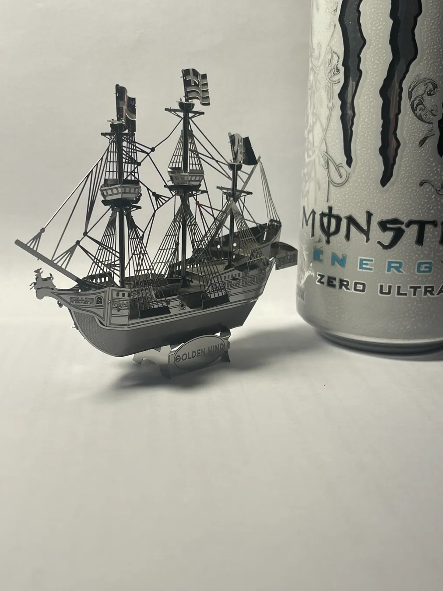
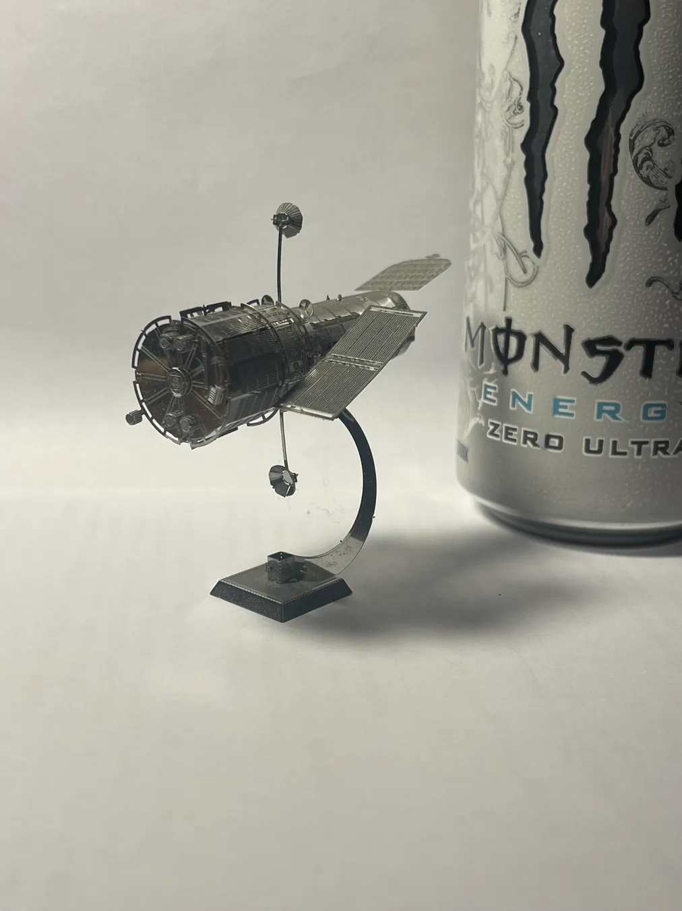
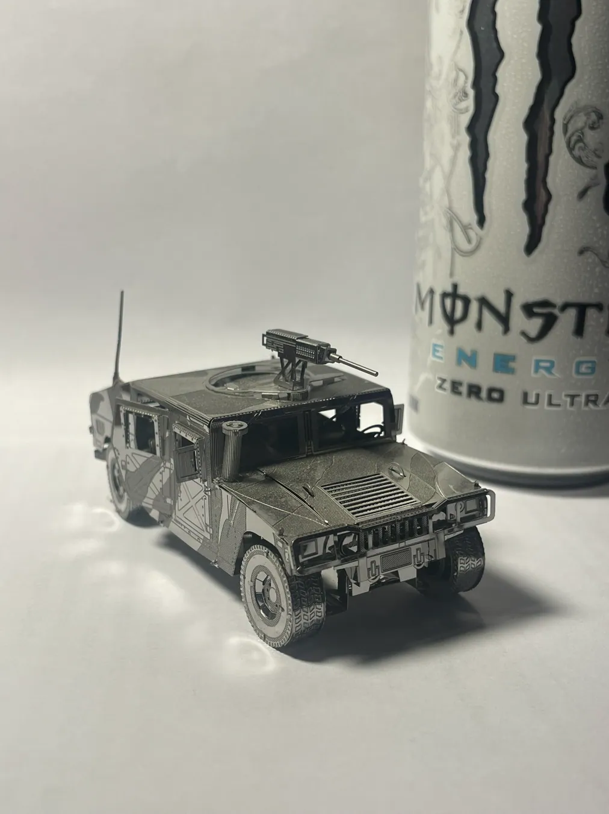
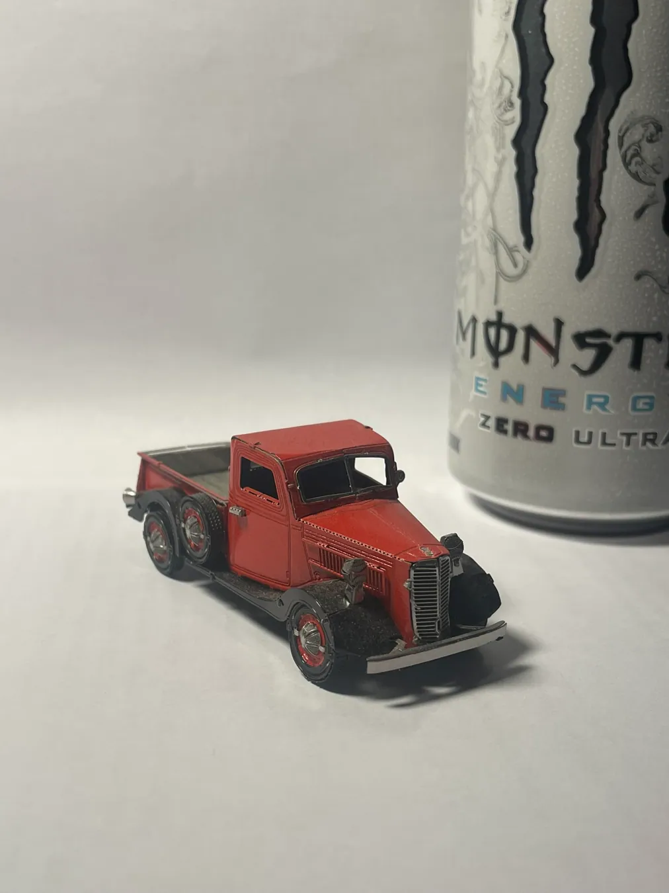
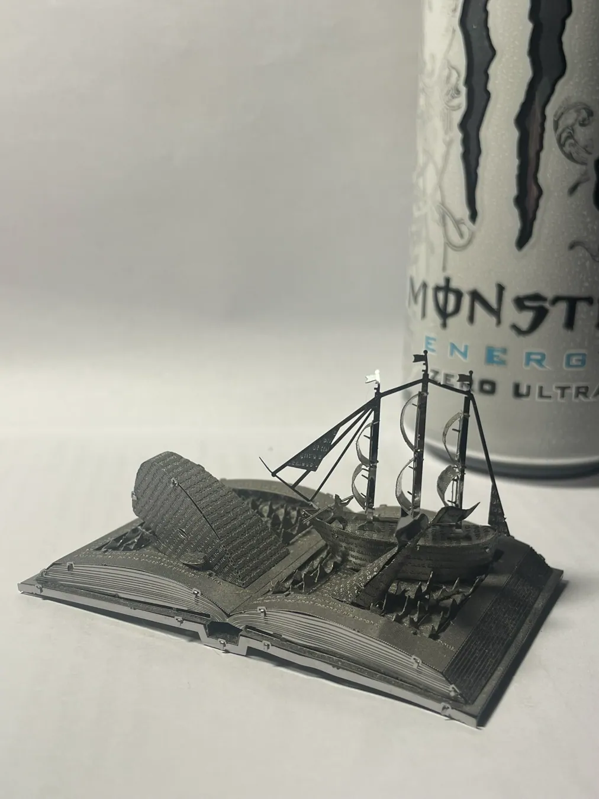
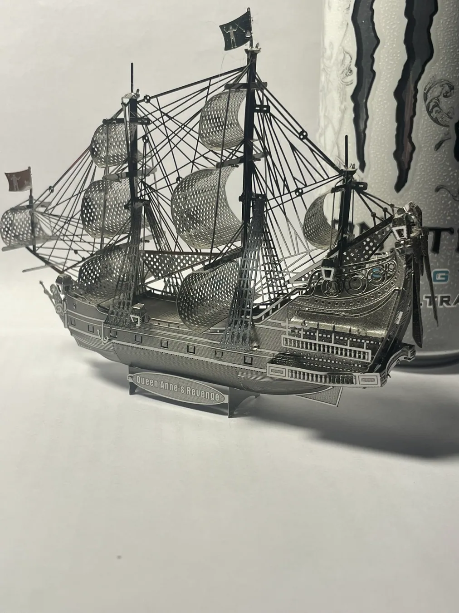
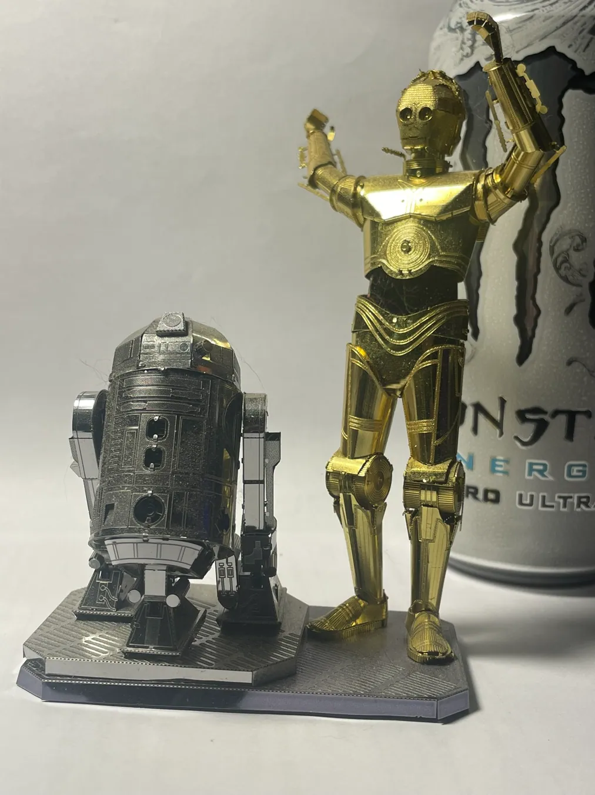
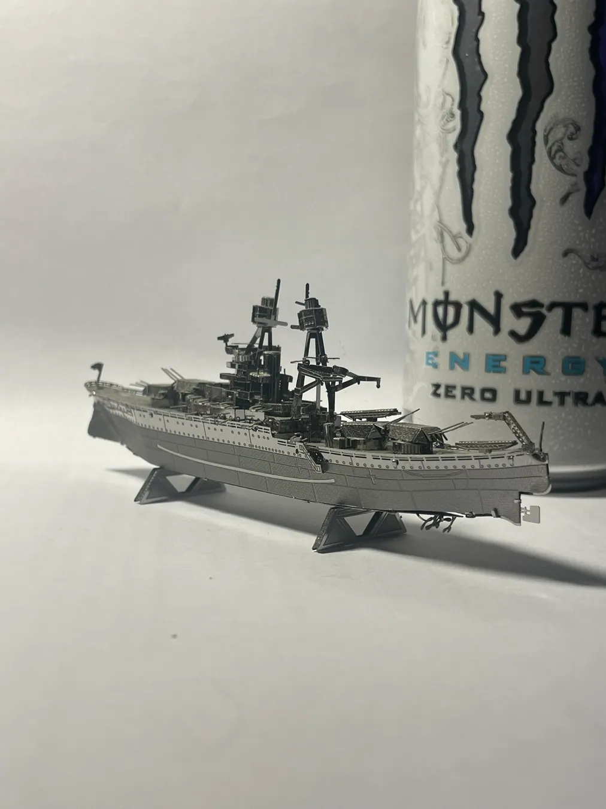
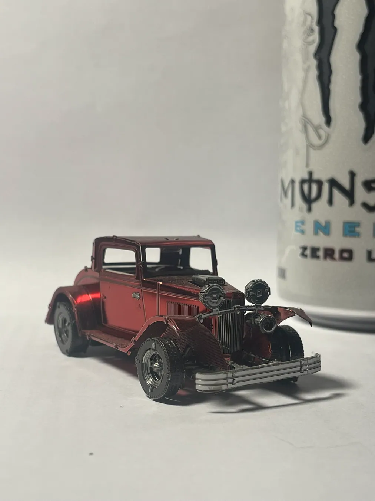
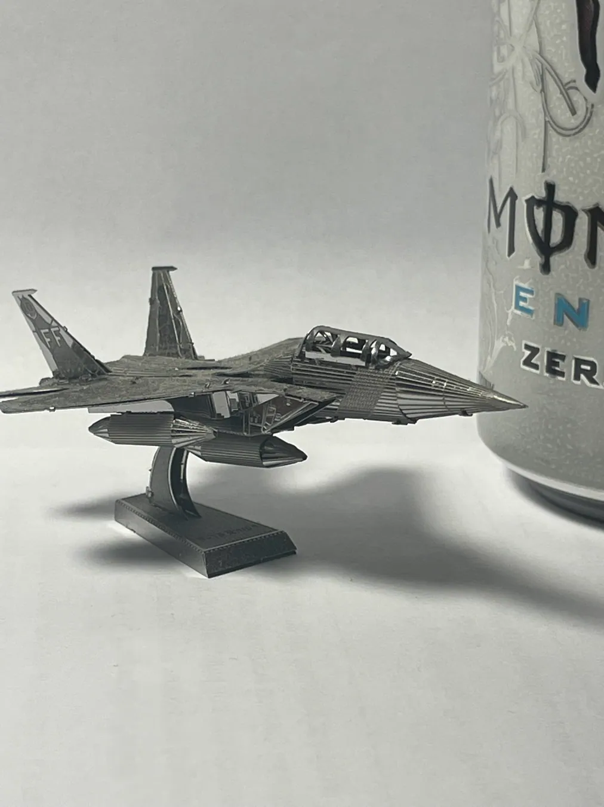

A HANDS-ON HOBBY / SINCE AGE 11
TINY PARTS.
BIG PATIENCE.
I've been building Metal Earth models by hand since I was eleven. Folding, shaping, and connecting tiny pieces of metal taught me patience, spatial thinking, and how satisfying precise assembly can be.
THE COLLECTION
















THE FAVORITE
GERMAN
FLAK 88.
A favorite build for its mechanical complexity and dense, intricate details. I photographed it twice — from afar and close up — so you can see how much is packed into a tiny model.
Official Metal Earth model ↗